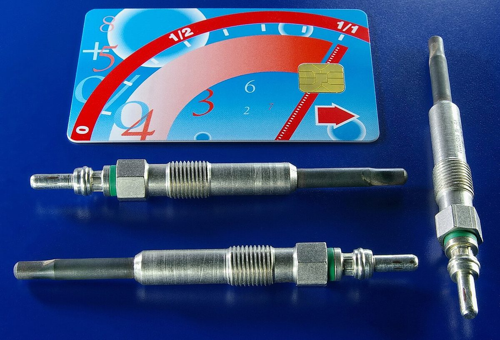

Poradňa autoservisu autoZ
Bliká kontrolka žhavenia
Oranžová kontrolka v tvare špirály patrí naftovým motorom. Keď krátko svieti pri štarte, je to v poriadku. Keď bliká počas jazdy, riadiaca jednotka motora zistila chybu a treba zistiť akú.


Môžem jazdiť?
Zastavte na bezpečnom mieste a ďalej nejazdite. Ak zároveň svieti kontrolka oleja alebo teploty, vypnite motor.
Zvyčajne môžete opatrne dôjsť do servisu. Nejazdite naplno, nepreťažujte motor a nečakajte s tým dlho – auto môže kedykoľvek prejsť do núdzového režimu.
Svieti pri štarte vs. bliká počas jazdy
Svieti po zapnutí zapaľovania a po chvíli zhasne – to je bežné žhavenie. Žhaviace sviečky predhrievajú spaľovací priestor, aby naftový motor ľahšie naštartoval, najmä za studena. Kontrolka zhasne, keď je predhrievanie hotové, a vtedy môžete štartovať. V teple môže svietiť len veľmi krátko.
Bliká počas jazdy alebo nezhasne – pri mnohých naftových autách tak riadiaca jednotka motora oznamuje chybu. Kontrolka žhavenia vtedy plní podobnú úlohu ako kontrolka motora. Chyba sa nemusí týkať žhavenia – môže ísť o snímač, vstrekovanie, plnenie turbom či recirkuláciu výfukových plynov.
Samotné blikanie teda nepovie, čo je pokazené. Povie to až chybový kód prečítaný diagnostikou.
Najčastejšie príčiny blikania
| Príčina | Čo si môžete všimnúť | Poznámka |
|---|---|---|
| Žhaviaca sviečka alebo riadiaca jednotka žhavenia | horší štart za studena, motor po štarte chvíľu nerovnomerne beží | chyba sa uloží v pamäti motora |
| Tlak paliva, palivové čerpadlo, palivový filter | slabší výkon, trhanie, horší štart | pri zanesenom filtri sa problém často zhoršuje pri záťaži |
| Tlak plniaceho vzduchu, turbo, netesná hadica | auto neťahá, prechod do núdzového režimu | často sprevádza syčanie pri zrýchľovaní |
| Ventil EGR, snímače motora | trhanie, slabší výkon | závisí od konkrétneho motora |
| Filter pevných častíc (DPF) | často svieti aj kontrolka DPF | pozri kontrolka DPF |
| Vstrekovače | nerovnomerný chod, dym, vyššia spotreba | overuje sa diagnostikou a meraním |
Prehľad je orientačný – ktoré chyby sa hlásia kontrolkou žhavenia, sa líši podľa výrobcu.
Čo urobiť, keď kontrolka žhavenia bliká
- Všímajte si, ako auto ide: či ťahá, či netrhá, či nedymí a či nesvietia aj iné kontrolky.
- Keď auto stratilo výkon alebo sa správa neobvykle, zastavte.
- Skontrolujte hladinu oleja a chladiacej kvapaliny (pri vychladnutom motore).
- Ak auto ide normálne, dôjdite opatrne do servisu a nechajte prečítať chybový kód.
- Chybu nemažte bez zistenia príčiny – kontrolka sa vráti a stratia sa údaje, ktoré pomáhajú pri hľadaní poruchy.
Prečo kontrolka žhavenia niekedy po reštarte zhasne
Pri niektorých chybách riadiaca jednotka prepne motor do núdzového režimu a po vypnutí a opätovnom naštartovaní ho znova pustí naplno. Kontrolka môže zhasnúť, ale chyba ostáva uložená v pamäti. Keď sa opakuje, ide o signál, že problém trvá. Reštart motora teda nie je oprava.
Pri benzínových motoroch kontrolka žhavenia nie je. Ak vám bliká kontrolka v tvare motora, pozrite kontrolka motora. Všetky kontrolky podľa farby nájdete na hlavnej stránke svietikontrolka.sk.
Časté otázky
Môžem jazdiť, keď bliká kontrolka žhavenia?
Ak auto ide normálne, zvyčajne môžete opatrne dôjsť do servisu. Ak stratilo výkon, trhá, dymí alebo svietia aj iné kontrolky, zastavte a ďalej nejazdite.
Je normálne, že kontrolka žhavenia svieti pri štarte?
Áno. Po zapnutí zapaľovania sa rozsvieti počas predhrievania a po chvíli zhasne. Problém je, keď nezhasne alebo bliká počas jazdy.
Znamená blikanie vždy chybnú žhaviacu sviečku?
Nie. Pri mnohých naftových autách kontrolka žhavenia hlási rôzne chyby motora, napríklad snímačov, tlaku paliva alebo turba. Príčinu ukáže až diagnostika.
Kontrolka po reštarte motora zhasla. Je to vyriešené?
Nie. Chyba zostáva uložená v pamäti riadiacej jednotky a pri opakovaní sa kontrolka rozsvieti znova. Odporúčame ju dať prečítať.
Kde v Trenčíne prečítajú chybu naftového motora?
V autoservise autoZ na ulici gen. M. R. Štefánika 6670/19 v Trenčíne, pri Kauflande. Objednať sa môžete na 0910 606 999 alebo na autoz.sk/rezervacia.
Potrebujete poradiť?
Diagnostiku a opravy naftových motorov robíme v autoservise autoZ v Trenčíne. Zavolajte alebo sa objednajte online. Fotku palubnej dosky môžete poslať aj na WhatsApp.
autoZ – autoservis Zelman · gen. M. R. Štefánika 6670/19, 911 01 Trenčín (pri Kauflande) · 0910 606 999 · Po–Pi 8:00–16:30 · www.autoz.sk · Diagnostika auta Trenčín · Oprava motora Trenčín